原文连接:https://www.cnblogs.com/qcrao-2018/p/10903807.html
目录
这篇文章主要讲 map 的赋值、删除、查询、扩容的具体执行过程，仍然是从底层的角度展开。结合源码，看完本文一定会彻底明白 map 底层原理。
我要说明的是，这里对 map 的基本用法涉及比较少，我相信可以通过阅读其他入门书籍了解。本文的内容比较深入，但是由于我画了各种图，我相信很容易看懂。
什么是 map
维基百科里这样定义 map：
In computer science, an associative array, map, symbol table, or dictionary is an abstract data type composed of a collection of (key, value) pairs, such that each possible key appears at most once in the collection.
简单说明一下：在计算机科学里，被称为相关数组、map、符号表或者字典，是由一组 <key, value> 对组成的抽象数据结构，并且同一个 key 只会出现一次。
有两个关键点：map 是由 key-value 对组成的；key 只会出现一次。
和 map 相关的操作主要是：
- 增加一个 k-v 对 —— Add or insert；
- 删除一个 k-v 对 —— Remove or delete；
- 修改某个 k 对应的 v —— Reassign；
- 查询某个 k 对应的 v —— Lookup；
简单说就是最基本的 增删查改。
map 的设计也被称为 “The dictionary problem”，它的任务是设计一种数据结构用来维护一个集合的数据，并且可以同时对集合进行增删查改的操作。最主要的数据结构有两种：哈希查找表（Hash table）、搜索树（Search tree）。
哈希查找表用一个哈希函数将 key 分配到不同的桶（bucket，也就是数组的不同 index）。这样，开销主要在哈希函数的计算以及数组的常数访问时间。在很多场景下，哈希查找表的性能很高。
哈希查找表一般会存在“碰撞”的问题，就是说不同的 key 被哈希到了同一个 bucket。一般有两种应对方法：链表法和开放地址法。链表法将一个 bucket 实现成一个链表，落在同一个 bucket 中的 key 都会插入这个链表。开放地址法则是碰撞发生后，通过一定的规律，在数组的后面挑选“空位”，用来放置新的 key。
搜索树法一般采用自平衡搜索树，包括：AVL 树，红黑树。面试时经常会被问到，甚至被要求手写红黑树代码，很多时候，面试官自己都写不上来，非常过分。
自平衡搜索树法的最差搜索效率是 O(logN)，而哈希查找表最差是 O(N)。当然，哈希查找表的平均查找效率是 O(1)，如果哈希函数设计的很好，最坏的情况基本不会出现。还有一点，遍历自平衡搜索树，返回的 key 序列，一般会按照从小到大的顺序；而哈希查找表则是乱序的。
为什么要用 map
从 Go 语言官方博客摘录一段话：
One of the most useful data structures in computer science is the hash table. Many hash table implementations exist with varying properties, but in general they offer fast lookups, adds, and deletes. Go provides a built-in map type that implements a hash table.
hash table 是计算机数据结构中一个最重要的设计。大部分 hash table 都实现了快速查找、添加、删除的功能。Go 语言内置的 map 实现了上述所有功能。
很难想象写一个程序不使用 map，以至于在回答为什么要用 map 这个问题上犯了难。
所以，到底为什么要用 map 呢？因为它太强大了，各种增删查改的操作效率非常高。
map 的底层如何实现
首先声明我用的 Go 版本：
go version go1.9.2 darwin/amd64前面说了 map 实现的几种方案，Go 语言采用的是哈希查找表，并且使用链表解决哈希冲突。
接下来我们要探索 map 的核心原理，一窥它的内部结构。
map 内存模型
在源码中，表示 map 的结构体是 hmap，它是 hashmap 的“缩写”：
// A header for a Go map.
type hmap struct {
// 元素个数，调用 len(map) 时，直接返回此值
count int
flags uint8
// buckets 的对数 log_2
B uint8
// overflow 的 bucket 近似数
noverflow uint16
// 计算 key 的哈希的时候会传入哈希函数
hash0 uint32
// 指向 buckets 数组，大小为 2^B
// 如果元素个数为0，就为 nil
buckets unsafe.Pointer
// 扩容的时候，buckets 长度会是 oldbuckets 的两倍
oldbuckets unsafe.Pointer
// 指示扩容进度，小于此地址的 buckets 迁移完成
nevacuate uintptr
extra *mapextra // optional fields
}说明一下，B 是 buckets 数组的长度的对数，也就是说 buckets 数组的长度就是 2^B。bucket 里面存储了 key 和 value，后面会再讲。
buckets 是一个指针，最终它指向的是一个结构体：
type bmap struct {
tophash [bucketCnt]uint8
}但这只是表面(src/runtime/hashmap.go)的结构，编译期间会给它加料，动态地创建一个新的结构：
type bmap struct {
topbits [8]uint8
keys [8]keytype
values [8]valuetype
pad uintptr
overflow uintptr
}bmap 就是我们常说的“桶”，桶里面会最多装 8 个 key，这些 key 之所以会落入同一个桶，是因为它们经过哈希计算后，哈希结果是“一类”的。在桶内，又会根据 key 计算出来的 hash 值的高 8 位来决定 key 到底落入桶内的哪个位置（一个桶内最多有8个位置）。
来一个整体的图：

当 map 的 key 和 value 都不是指针，并且 size 都小于 128 字节的情况下，会把 bmap 标记为不含指针，这样可以避免 gc 时扫描整个 hmap。但是，我们看 bmap 其实有一个 overflow 的字段，是指针类型的，破坏了 bmap 不含指针的设想，这时会把 overflow 移动到 extra 字段来。
type mapextra struct {
// overflow[0] contains overflow buckets for hmap.buckets.
// overflow[1] contains overflow buckets for hmap.oldbuckets.
overflow [2]*[]*bmap
// nextOverflow 包含空闲的 overflow bucket，这是预分配的 bucket
nextOverflow *bmap
}bmap 是存放 k-v 的地方，我们把视角拉近，仔细看 bmap 的内部组成。

上图就是 bucket 的内存模型，HOB Hash 指的就是 top hash。 注意到 key 和 value 是各自放在一起的，并不是 key/value/key/value/... 这样的形式。源码里说明这样的好处是在某些情况下可以省略掉 padding 字段，节省内存空间。
例如，有这样一个类型的 map：
map[int64]int8如果按照 key/value/key/value/... 这样的模式存储，那在每一个 key/value 对之后都要额外 padding 7 个字节；而将所有的 key，value 分别绑定到一起，这种形式 key/key/.../value/value/...，则只需要在最后添加 padding。
每个 bucket 设计成最多只能放 8 个 key-value 对，如果有第 9 个 key-value 落入当前的 bucket，那就需要再构建一个 bucket ，通过 overflow 指针连接起来。
创建 map
从语法层面上来说，创建 map 很简单：
ageMp := make(map[string]int)
// 指定 map 长度
ageMp := make(map[string]int, 8)
// ageMp 为 nil，不能向其添加元素，会直接panic
var ageMp map[string]int通过汇编语言可以看到，实际上底层调用的是 makemap 函数，主要做的工作就是初始化 hmap 结构体的各种字段，例如计算 B 的大小，设置哈希种子 hash0 等等。
func makemap(t *maptype, hint int64, h *hmap, bucket unsafe.Pointer) *hmap {
// 省略各种条件检查...
// 找到一个 B，使得 map 的装载因子在正常范围内
B := uint8(0)
for ; overLoadFactor(hint, B); B++ {
}
// 初始化 hash table
// 如果 B 等于 0，那么 buckets 就会在赋值的时候再分配
// 如果长度比较大，分配内存会花费长一点
buckets := bucket
var extra *mapextra
if B != 0 {
var nextOverflow *bmap
buckets, nextOverflow = makeBucketArray(t, B)
if nextOverflow != nil {
extra = new(mapextra)
extra.nextOverflow = nextOverflow
}
}
// 初始化 hamp
if h == nil {
h = (*hmap)(newobject(t.hmap))
}
h.count = 0
h.B = B
h.extra = extra
h.flags = 0
h.hash0 = fastrand()
h.buckets = buckets
h.oldbuckets = nil
h.nevacuate = 0
h.noverflow = 0
return h
}注意，这个函数返回的结果：*hmap，它是一个指针，而我们之前讲过的 makeslice 函数返回的是 Slice 结构体：
func makeslice(et *_type, len, cap int) slice回顾一下 slice 的结构体定义：
// runtime/slice.go
type slice struct {
array unsafe.Pointer // 元素指针
len int // 长度
cap int // 容量
}结构体内部包含底层的数据指针。
makemap 和 makeslice 的区别，带来一个不同点：当 map 和 slice 作为函数参数时，在函数参数内部对 map 的操作会影响 map 自身；而对 slice 却不会（之前讲 slice 的文章里有讲过）。
主要原因：一个是指针（*hmap），一个是结构体（slice）。Go 语言中的函数传参都是值传递，在函数内部，参数会被 copy 到本地。*hmap指针 copy 完之后，仍然指向同一个 map，因此函数内部对 map 的操作会影响实参。而 slice 被 copy 后，会成为一个新的 slice，对它进行的操作不会影响到实参。
哈希函数
map 的一个关键点在于，哈希函数的选择。在程序启动时，会检测 cpu 是否支持 aes，如果支持，则使用 aes hash，否则使用 memhash。这是在函数 alginit() 中完成，位于路径：src/runtime/alg.go 下。
hash 函数，有加密型和非加密型。
加密型的一般用于加密数据、数字摘要等，典型代表就是 md5、sha1、sha256、aes256 这种；
非加密型的一般就是查找。在 map 的应用场景中，用的是查找。
选择 hash 函数主要考察的是两点：性能、碰撞概率。
之前我们讲过，表示类型的结构体：
type _type struct {
size uintptr
ptrdata uintptr // size of memory prefix holding all pointers
hash uint32
tflag tflag
align uint8
fieldalign uint8
kind uint8
alg *typeAlg
gcdata *byte
str nameOff
ptrToThis typeOff
}其中 alg 字段就和哈希相关，它是指向如下结构体的指针：
// src/runtime/alg.go
type typeAlg struct {
// (ptr to object, seed) -> hash
hash func(unsafe.Pointer, uintptr) uintptr
// (ptr to object A, ptr to object B) -> ==?
equal func(unsafe.Pointer, unsafe.Pointer) bool
}typeAlg 包含两个函数，hash 函数计算类型的哈希值，而 equal 函数则计算两个类型是否“哈希相等”。
对于 string 类型，它的 hash、equal 函数如下：
func strhash(a unsafe.Pointer, h uintptr) uintptr {
x := (*stringStruct)(a)
return memhash(x.str, h, uintptr(x.len))
}
func strequal(p, q unsafe.Pointer) bool {
return *(*string)(p) == *(*string)(q)
}根据 key 的类型，_type 结构体的 alg 字段会被设置对应类型的 hash 和 equal 函数。
key 定位过程
key 经过哈希计算后得到哈希值，共 64 个 bit 位（64位机，32位机就不讨论了，现在主流都是64位机），计算它到底要落在哪个桶时，只会用到最后 B 个 bit 位。还记得前面提到过的 B 吗？如果 B = 5，那么桶的数量，也就是 buckets 数组的长度是 2^5 = 32。
例如，现在有一个 key 经过哈希函数计算后，得到的哈希结果是：
10010111 | 000011110110110010001111001010100010010110010101010 │ 01010用最后的 5 个 bit 位，也就是 01010，值为 10，也就是 10 号桶。这个操作实际上就是取余操作，但是取余开销太大，所以代码实现上用的位操作代替。
再用哈希值的高 8 位，找到此 key 在 bucket 中的位置，这是在寻找已有的 key。最开始桶内还没有 key，新加入的 key 会找到第一个空位，放入。
buckets 编号就是桶编号，当两个不同的 key 落在同一个桶中，也就是发生了哈希冲突。冲突的解决手段是用链表法：在 bucket 中，从前往后找到第一个空位。这样，在查找某个 key 时，先找到对应的桶，再去遍历 bucket 中的 key。
这里参考曹大 github 博客里的一张图，原图是 ascii 图，geek 味十足，可以从参考资料找到曹大的博客，推荐大家去看看。

上图中，假定 B = 5，所以 bucket 总数就是 2^5 = 32。首先计算出待查找 key 的哈希，使用低 5 位 00110，找到对应的 6 号 bucket，使用高 8 位 10010111，对应十进制 151，在 6 号 bucket 中寻找 tophash 值（HOB hash）为 151 的 key，找到了 2 号槽位，这样整个查找过程就结束了。
如果在 bucket 中没找到，并且 overflow 不为空，还要继续去 overflow bucket 中寻找，直到找到或是所有的 key 槽位都找遍了，包括所有的 overflow bucket。
我们来看下源码吧，哈哈！通过汇编语言可以看到，查找某个 key 的底层函数是 mapacess 系列函数，函数的作用类似，区别在下一节会讲到。这里我们直接看 mapacess1 函数：
func mapaccess1(t *maptype, h *hmap, key unsafe.Pointer) unsafe.Pointer {
// ……
// 如果 h 什么都没有，返回零值
if h == nil || h.count == 0 {
return unsafe.Pointer(&zeroVal[0])
}
// 写和读冲突
if h.flags&hashWriting != 0 {
throw("concurrent map read and map write")
}
// 不同类型 key 使用的 hash 算法在编译期确定
alg := t.key.alg
// 计算哈希值，并且加入 hash0 引入随机性
hash := alg.hash(key, uintptr(h.hash0))
// 比如 B=5，那 m 就是31，二进制是全 1
// 求 bucket num 时，将 hash 与 m 相与，
// 达到 bucket num 由 hash 的低 8 位决定的效果
m := uintptr(1)<<h.B - 1
// b 就是 bucket 的地址
b := (*bmap)(add(h.buckets, (hash&m)*uintptr(t.bucketsize)))
// oldbuckets 不为 nil，说明发生了扩容
if c := h.oldbuckets; c != nil {
// 如果不是同 size 扩容（看后面扩容的内容）
// 对应条件 1 的解决方案
if !h.sameSizeGrow() {
// 新 bucket 数量是老的 2 倍
m >>= 1
}
// 求出 key 在老的 map 中的 bucket 位置
oldb := (*bmap)(add(c, (hash&m)*uintptr(t.bucketsize)))
// 如果 oldb 没有搬迁到新的 bucket
// 那就在老的 bucket 中寻找
if !evacuated(oldb) {
b = oldb
}
}
// 计算出高 8 位的 hash
// 相当于右移 56 位，只取高8位
top := uint8(hash >> (sys.PtrSize*8 - 8))
// 增加一个 minTopHash
if top < minTopHash {
top += minTopHash
}
for {
// 遍历 8 个 bucket
for i := uintptr(0); i < bucketCnt; i++ {
// tophash 不匹配，继续
if b.tophash[i] != top {
continue
}
// tophash 匹配，定位到 key 的位置
k := add(unsafe.Pointer(b), dataOffset+i*uintptr(t.keysize))
// key 是指针
if t.indirectkey {
// 解引用
k = *((*unsafe.Pointer)(k))
}
// 如果 key 相等
if alg.equal(key, k) {
// 定位到 value 的位置
v := add(unsafe.Pointer(b), dataOffset+bucketCnt*uintptr(t.keysize)+i*uintptr(t.valuesize))
// value 解引用
if t.indirectvalue {
v = *((*unsafe.Pointer)(v))
}
return v
}
}
// bucket 找完（还没找到），继续到 overflow bucket 里找
b = b.overflow(t)
// overflow bucket 也找完了，说明没有目标 key
// 返回零值
if b == nil {
return unsafe.Pointer(&zeroVal[0])
}
}
}函数返回 h[key] 的指针，如果 h 中没有此 key，那就会返回一个 key 相应类型的零值，不会返回 nil。
代码整体比较直接，没什么难懂的地方。跟着上面的注释一步步理解就好了。
这里，说一下定位 key 和 value 的方法以及整个循环的写法。
// key 定位公式
k := add(unsafe.Pointer(b), dataOffset+i*uintptr(t.keysize))
// value 定位公式
v := add(unsafe.Pointer(b), dataOffset+bucketCnt*uintptr(t.keysize)+i*uintptr(t.valuesize))b 是 bmap 的地址，这里 bmap 还是源码里定义的结构体，只包含一个 tophash 数组，经编译器扩充之后的结构体才包含 key，value，overflow 这些字段。dataOffset 是 key 相对于 bmap 起始地址的偏移：
dataOffset = unsafe.Offsetof(struct {
b bmap
v int64
}{}.v)因此 bucket 里 key 的起始地址就是 unsafe.Pointer(b)+dataOffset。第 i 个 key 的地址就要在此基础上跨过 i 个 key 的大小；而我们又知道，value 的地址是在所有 key 之后，因此第 i 个 value 的地址还需要加上所有 key 的偏移。理解了这些，上面 key 和 value 的定位公式就很好理解了。
再说整个大循环的写法，最外层是一个无限循环，通过
b = b.overflow(t)遍历所有的 bucket，这相当于是一个 bucket 链表。
当定位到一个具体的 bucket 时，里层循环就是遍历这个 bucket 里所有的 cell，或者说所有的槽位，也就是 bucketCnt=8 个槽位。整个循环过程：

再说一下 minTopHash，当一个 cell 的 tophash 值小于 minTopHash 时，标志这个 cell 的迁移状态。因为这个状态值是放在 tophash 数组里，为了和正常的哈希值区分开，会给 key 计算出来的哈希值一个增量：minTopHash。这样就能区分正常的 top hash 值和表示状态的哈希值。
下面的这几种状态就表征了 bucket 的情况：
// 空的 cell，也是初始时 bucket 的状态
empty = 0
// 空的 cell，表示 cell 已经被迁移到新的 bucket
evacuatedEmpty = 1
// key,value 已经搬迁完毕，但是 key 都在新 bucket 前半部分，
// 后面扩容部分会再讲到。
evacuatedX = 2
// 同上，key 在后半部分
evacuatedY = 3
// tophash 的最小正常值
minTopHash = 4源码里判断这个 bucket 是否已经搬迁完毕，用到的函数：
func evacuated(b *bmap) bool {
h := b.tophash[0]
return h > empty && h < minTopHash
}只取了 tophash 数组的第一个值，判断它是否在 0-4 之间。对比上面的常量，当 top hash 是 evacuatedEmpty、evacuatedX、evacuatedY 这三个值之一，说明此 bucket 中的 key 全部被搬迁到了新 bucket。
map 的两种 get 操作
Go 语言中读取 map 有两种语法：带 comma 和 不带 comma。当要查询的 key 不在 map 里，带 comma 的用法会返回一个 bool 型变量提示 key 是否在 map 中；而不带 comma 的语句则会返回一个 value 类型的零值。如果 value 是 int 型就会返回 0，如果 value 是 string 类型，就会返回空字符串。
package main
import "fmt"
func main() {
ageMap := make(map[string]int)
ageMap["qcrao"] = 18
// 不带 comma 用法
age1 := ageMap["stefno"]
fmt.Println(age1)
// 带 comma 用法
age2, ok := ageMap["stefno"]
fmt.Println(age2, ok)
}运行结果：
0
0 false以前一直觉得好神奇，怎么实现的？这其实是编译器在背后做的工作：分析代码后，将两种语法对应到底层两个不同的函数。
// src/runtime/hashmap.go
func mapaccess1(t *maptype, h *hmap, key unsafe.Pointer) unsafe.Pointer
func mapaccess2(t *maptype, h *hmap, key unsafe.Pointer) (unsafe.Pointer, bool)源码里，函数命名不拘小节，直接带上后缀 1，2，完全不理会《代码大全》里的那一套命名的做法。从上面两个函数的声明也可以看出差别了，mapaccess2 函数返回值多了一个 bool 型变量，两者的代码也是完全一样的，只是在返回值后面多加了一个 false 或者 true。
另外，根据 key 的不同类型，编译器还会将查找、插入、删除的函数用更具体的函数替换，以优化效率：
| key 类型 | 查找 |
|---|---|
| uint32 | mapaccess1_fast32(t maptype, h hmap, key uint32) unsafe.Pointer |
| uint32 | mapaccess2_fast32(t maptype, h hmap, key uint32) (unsafe.Pointer, bool) |
| uint64 | mapaccess1_fast64(t maptype, h hmap, key uint64) unsafe.Pointer |
| uint64 | mapaccess2_fast64(t maptype, h hmap, key uint64) (unsafe.Pointer, bool) |
| string | mapaccess1_faststr(t maptype, h hmap, ky string) unsafe.Pointer |
| string | mapaccess2_faststr(t maptype, h hmap, ky string) (unsafe.Pointer, bool) |
这些函数的参数类型直接是具体的 uint32、unt64、string，在函数内部由于提前知晓了 key 的类型，所以内存布局是很清楚的，因此能节省很多操作，提高效率。
上面这些函数都是在文件 src/runtime/hashmap_fast.go 里。
如何进行扩容
使用哈希表的目的就是要快速查找到目标 key，然而，随着向 map 中添加的 key 越来越多，key 发生碰撞的概率也越来越大。bucket 中的 8 个 cell 会被逐渐塞满，查找、插入、删除 key 的效率也会越来越低。最理想的情况是一个 bucket 只装一个 key，这样，就能达到 O(1) 的效率，但这样空间消耗太大，用空间换时间的代价太高。
Go 语言采用一个 bucket 里装载 8 个 key，定位到某个 bucket 后，还需要再定位到具体的 key，这实际上又用了时间换空间。
当然，这样做，要有一个度，不然所有的 key 都落在了同一个 bucket 里，直接退化成了链表，各种操作的效率直接降为 O(n)，是不行的。
因此，需要有一个指标来衡量前面描述的情况，这就是装载因子。Go 源码里这样定义 装载因子：
loadFactor := count / (2^B)count 就是 map 的元素个数，2^B 表示 bucket 数量。
再来说触发 map 扩容的时机：在向 map 插入新 key 的时候，会进行条件检测，符合下面这 2 个条件，就会触发扩容：
- 装载因子超过阈值，源码里定义的阈值是 6.5。
- overflow 的 bucket 数量过多：当 B 小于 15，也就是 bucket 总数 2^B 小于 2^15 时，如果 overflow 的 bucket 数量超过 2^B；当 B >= 15，也就是 bucket 总数 2^B 大于等于 2^15，如果 overflow 的 bucket 数量超过 2^15。
通过汇编语言可以找到赋值操作对应源码中的函数是 mapassign，对应扩容条件的源码如下：
// src/runtime/hashmap.go/mapassign
// 触发扩容时机
if !h.growing() && (overLoadFactor(int64(h.count), h.B) || tooManyOverflowBuckets(h.noverflow, h.B)) {
hashGrow(t, h)
}
// 装载因子超过 6.5
func overLoadFactor(count int64, B uint8) bool {
return count >= bucketCnt && float32(count) >= loadFactor*float32((uint64(1)<<B))
}
// overflow buckets 太多
func tooManyOverflowBuckets(noverflow uint16, B uint8) bool {
if B < 16 {
return noverflow >= uint16(1)<<B
}
return noverflow >= 1<<15
}解释一下：
第 1 点：我们知道，每个 bucket 有 8 个空位，在没有溢出，且所有的桶都装满了的情况下，装载因子算出来的结果是 8。因此当装载因子超过 6.5 时，表明很多 bucket 都快要装满了，查找效率和插入效率都变低了。在这个时候进行扩容是有必要的。
第 2 点：是对第 1 点的补充。就是说在装载因子比较小的情况下，这时候 map 的查找和插入效率也很低，而第 1 点识别不出来这种情况。表面现象就是计算装载因子的分子比较小，即 map 里元素总数少，但是 bucket 数量多（真实分配的 bucket 数量多，包括大量的 overflow bucket）。
不难想像造成这种情况的原因：不停地插入、删除元素。先插入很多元素，导致创建了很多 bucket，但是装载因子达不到第 1 点的临界值，未触发扩容来缓解这种情况。之后，删除元素降低元素总数量，再插入很多元素，导致创建很多的 overflow bucket，但就是不会触犯第 1 点的规定，你能拿我怎么办？overflow bucket 数量太多，导致 key 会很分散，查找插入效率低得吓人，因此出台第 2 点规定。这就像是一座空城，房子很多，但是住户很少，都分散了，找起人来很困难。
对于命中条件 1，2 的限制，都会发生扩容。但是扩容的策略并不相同，毕竟两种条件应对的场景不同。
对于条件 1，元素太多，而 bucket 数量太少，很简单：将 B 加 1，bucket 最大数量（2^B）直接变成原来 bucket 数量的 2 倍。于是，就有新老 bucket 了。注意，这时候元素都在老 bucket 里，还没迁移到新的 bucket 来。而且，新 bucket 只是最大数量变为原来最大数量（2^B）的 2 倍（2^B * 2）。
对于条件 2，其实元素没那么多，但是 overflow bucket 数特别多，说明很多 bucket 都没装满。解决办法就是开辟一个新 bucket 空间，将老 bucket 中的元素移动到新 bucket，使得同一个 bucket 中的 key 排列地更紧密。这样，原来，在 overflow bucket 中的 key 可以移动到 bucket 中来。结果是节省空间，提高 bucket 利用率，map 的查找和插入效率自然就会提升。
对于条件 2 的解决方案，曹大的博客里还提出了一个极端的情况：如果插入 map 的 key 哈希都一样，就会落到同一个 bucket 里，超过 8 个就会产生 overflow bucket，结果也会造成 overflow bucket 数过多。移动元素其实解决不了问题，因为这时整个哈希表已经退化成了一个链表，操作效率变成了 O(n)。
再来看一下扩容具体是怎么做的。由于 map 扩容需要将原有的 key/value 重新搬迁到新的内存地址，如果有大量的 key/value 需要搬迁，会非常影响性能。因此 Go map 的扩容采取了一种称为“渐进式”地方式，原有的 key 并不会一次性搬迁完毕，每次最多只会搬迁 2 个 bucket。
上面说的 hashGrow() 函数实际上并没有真正地“搬迁”，它只是分配好了新的 buckets，并将老的 buckets 挂到了 oldbuckets 字段上。真正搬迁 buckets 的动作在 growWork() 函数中，而调用 growWork() 函数的动作是在 mapassign 和 mapdelete 函数中。也就是插入或修改、删除 key 的时候，都会尝试进行搬迁 buckets 的工作。先检查 oldbuckets 是否搬迁完毕，具体来说就是检查 oldbuckets 是否为 nil。
我们先看 hashGrow() 函数所做的工作，再来看具体的搬迁 buckets 是如何进行的。
func hashGrow(t *maptype, h *hmap) {
// B+1 相当于是原来 2 倍的空间
bigger := uint8(1)
// 对应条件 2
if !overLoadFactor(int64(h.count), h.B) {
// 进行等量的内存扩容，所以 B 不变
bigger = 0
h.flags |= sameSizeGrow
}
// 将老 buckets 挂到 buckets 上
oldbuckets := h.buckets
// 申请新的 buckets 空间
newbuckets, nextOverflow := makeBucketArray(t, h.B+bigger)
flags := h.flags &^ (iterator | oldIterator)
if h.flags&iterator != 0 {
flags |= oldIterator
}
// 提交 grow 的动作
h.B += bigger
h.flags = flags
h.oldbuckets = oldbuckets
h.buckets = newbuckets
// 搬迁进度为 0
h.nevacuate = 0
// overflow buckets 数为 0
h.noverflow = 0
// ……
}主要是申请到了新的 buckets 空间，把相关的标志位都进行了处理：例如标志 nevacuate 被置为 0， 表示当前搬迁进度为 0。
值得一说的是对 h.flags 的处理：
flags := h.flags &^ (iterator | oldIterator)
if h.flags&iterator != 0 {
flags |= oldIterator
}这里得先说下运算符：&^。这叫按位置 0运算符。例如：
x = 01010011
y = 01010100
z = x &^ y = 00000011如果 y bit 位为 1，那么结果 z 对应 bit 位就为 0，否则 z 对应 bit 位就和 x 对应 bit 位的值相同。
所以上面那段对 flags 一顿操作的代码的意思是：先把 h.flags 中 iterator 和 oldIterator 对应位清 0，然后如果发现 iterator 位为 1，那就把它转接到 oldIterator 位，使得 oldIterator 标志位变成 1。潜台词就是：buckets 现在挂到了 oldBuckets 名下了，对应的标志位也转接过去吧。
几个标志位如下：
// 可能有迭代器使用 buckets
iterator = 1
// 可能有迭代器使用 oldbuckets
oldIterator = 2
// 有协程正在向 map 中写入 key
hashWriting = 4
// 等量扩容（对应条件 2）
sameSizeGrow = 8再来看看真正执行搬迁工作的 growWork() 函数。
func growWork(t *maptype, h *hmap, bucket uintptr) {
// 确认搬迁老的 bucket 对应正在使用的 bucket
evacuate(t, h, bucket&h.oldbucketmask())
// 再搬迁一个 bucket，以加快搬迁进程
if h.growing() {
evacuate(t, h, h.nevacuate)
}
}h.growing() 函数非常简单：
func (h *hmap) growing() bool {
return h.oldbuckets != nil
}如果 oldbuckets 不为空，说明还没有搬迁完毕，还得继续搬。
bucket&h.oldbucketmask() 这行代码，如源码注释里说的，是为了确认搬迁的 bucket 是我们正在使用的 bucket。oldbucketmask() 函数返回扩容前的 map 的 bucketmask。
所谓的 bucketmask，作用就是将 key 计算出来的哈希值与 bucketmask 相与，得到的结果就是 key 应该落入的桶。比如 B = 5，那么 bucketmask 的低 5 位是 11111，其余位是 0，hash 值与其相与的意思是，只有 hash 值的低 5 位决策 key 到底落入哪个 bucket。
接下来，我们集中所有的精力在搬迁的关键函数 evacuate。源码贴在下面，不要紧张，我会加上大面积的注释，通过注释绝对是能看懂的。之后，我会再对搬迁过程作详细说明。
源码如下：
func evacuate(t *maptype, h *hmap, oldbucket uintptr) {
// 定位老的 bucket 地址
b := (*bmap)(add(h.oldbuckets, oldbucket*uintptr(t.bucketsize)))
// 结果是 2^B，如 B = 5，结果为32
newbit := h.noldbuckets()
// key 的哈希函数
alg := t.key.alg
// 如果 b 没有被搬迁过
if !evacuated(b) {
var (
// 表示bucket 移动的目标地址
x, y *bmap
// 指向 x,y 中的 key/val
xi, yi int
// 指向 x，y 中的 key
xk, yk unsafe.Pointer
// 指向 x，y 中的 value
xv, yv unsafe.Pointer
)
// 默认是等 size 扩容，前后 bucket 序号不变
// 使用 x 来进行搬迁
x = (*bmap)(add(h.buckets, oldbucket*uintptr(t.bucketsize)))
xi = 0
xk = add(unsafe.Pointer(x), dataOffset)
xv = add(xk, bucketCnt*uintptr(t.keysize))、
// 如果不是等 size 扩容，前后 bucket 序号有变
// 使用 y 来进行搬迁
if !h.sameSizeGrow() {
// y 代表的 bucket 序号增加了 2^B
y = (*bmap)(add(h.buckets, (oldbucket+newbit)*uintptr(t.bucketsize)))
yi = 0
yk = add(unsafe.Pointer(y), dataOffset)
yv = add(yk, bucketCnt*uintptr(t.keysize))
}
// 遍历所有的 bucket，包括 overflow buckets
// b 是老的 bucket 地址
for ; b != nil; b = b.overflow(t) {
k := add(unsafe.Pointer(b), dataOffset)
v := add(k, bucketCnt*uintptr(t.keysize))
// 遍历 bucket 中的所有 cell
for i := 0; i < bucketCnt; i, k, v = i+1, add(k, uintptr(t.keysize)), add(v, uintptr(t.valuesize)) {
// 当前 cell 的 top hash 值
top := b.tophash[i]
// 如果 cell 为空，即没有 key
if top == empty {
// 那就标志它被"搬迁"过
b.tophash[i] = evacuatedEmpty
// 继续下个 cell
continue
}
// 正常不会出现这种情况
// 未被搬迁的 cell 只可能是 empty 或是
// 正常的 top hash（大于 minTopHash）
if top < minTopHash {
throw("bad map state")
}
k2 := k
// 如果 key 是指针，则解引用
if t.indirectkey {
k2 = *((*unsafe.Pointer)(k2))
}
// 默认使用 X，等量扩容
useX := true
// 如果不是等量扩容
if !h.sameSizeGrow() {
// 计算 hash 值，和 key 第一次写入时一样
hash := alg.hash(k2, uintptr(h.hash0))
// 如果有协程正在遍历 map
if h.flags&iterator != 0 {
// 如果出现 相同的 key 值，算出来的 hash 值不同
if !t.reflexivekey && !alg.equal(k2, k2) {
// 只有在 float 变量的 NaN() 情况下会出现
if top&1 != 0 {
// 第 B 位置 1
hash |= newbit
} else {
// 第 B 位置 0
hash &^= newbit
}
// 取高 8 位作为 top hash 值
top = uint8(hash >> (sys.PtrSize*8 - 8))
if top < minTopHash {
top += minTopHash
}
}
}
// 取决于新哈希值的 oldB+1 位是 0 还是 1
// 详细看后面的文章
useX = hash&newbit == 0
}
// 如果 key 搬到 X 部分
if useX {
// 标志老的 cell 的 top hash 值，表示搬移到 X 部分
b.tophash[i] = evacuatedX
// 如果 xi 等于 8，说明要溢出了
if xi == bucketCnt {
// 新建一个 bucket
newx := h.newoverflow(t, x)
x = newx
// xi 从 0 开始计数
xi = 0
// xk 表示 key 要移动到的位置
xk = add(unsafe.Pointer(x), dataOffset)
// xv 表示 value 要移动到的位置
xv = add(xk, bucketCnt*uintptr(t.keysize))
}
// 设置 top hash 值
x.tophash[xi] = top
// key 是指针
if t.indirectkey {
// 将原 key（是指针）复制到新位置
*(*unsafe.Pointer)(xk) = k2 // copy pointer
} else {
// 将原 key（是值）复制到新位置
typedmemmove(t.key, xk, k) // copy value
}
// value 是指针，操作同 key
if t.indirectvalue {
*(*unsafe.Pointer)(xv) = *(*unsafe.Pointer)(v)
} else {
typedmemmove(t.elem, xv, v)
}
// 定位到下一个 cell
xi++
xk = add(xk, uintptr(t.keysize))
xv = add(xv, uintptr(t.valuesize))
} else { // key 搬到 Y 部分，操作同 X 部分
// ……
// 省略了这部分，操作和 X 部分相同
}
}
}
// 如果没有协程在使用老的 buckets，就把老 buckets 清除掉，帮助gc
if h.flags&oldIterator == 0 {
b = (*bmap)(add(h.oldbuckets, oldbucket*uintptr(t.bucketsize)))
// 只清除bucket 的 key,value 部分，保留 top hash 部分，指示搬迁状态
if t.bucket.kind&kindNoPointers == 0 {
memclrHasPointers(add(unsafe.Pointer(b), dataOffset), uintptr(t.bucketsize)-dataOffset)
} else {
memclrNoHeapPointers(add(unsafe.Pointer(b), dataOffset), uintptr(t.bucketsize)-dataOffset)
}
}
}
// 更新搬迁进度
// 如果此次搬迁的 bucket 等于当前进度
if oldbucket == h.nevacuate {
// 进度加 1
h.nevacuate = oldbucket + 1
// Experiments suggest that 1024 is overkill by at least an order of magnitude.
// Put it in there as a safeguard anyway, to ensure O(1) behavior.
// 尝试往后看 1024 个 bucket
stop := h.nevacuate + 1024
if stop > newbit {
stop = newbit
}
// 寻找没有搬迁的 bucket
for h.nevacuate != stop && bucketEvacuated(t, h, h.nevacuate) {
h.nevacuate++
}
// 现在 h.nevacuate 之前的 bucket 都被搬迁完毕
// 所有的 buckets 搬迁完毕
if h.nevacuate == newbit {
// 清除老的 buckets
h.oldbuckets = nil
// 清除老的 overflow bucket
// 回忆一下：[0] 表示当前 overflow bucket
// [1] 表示 old overflow bucket
if h.extra != nil {
h.extra.overflow[1] = nil
}
// 清除正在扩容的标志位
h.flags &^= sameSizeGrow
}
}
}evacuate 函数的代码注释非常清晰，对着代码和注释是很容易看懂整个的搬迁过程的，耐心点。
搬迁的目的就是将老的 buckets 搬迁到新的 buckets。而通过前面的说明我们知道，应对条件 1，新的 buckets 数量是之前的一倍，应对条件 2，新的 buckets 数量和之前相等。
对于条件 2，从老的 buckets 搬迁到新的 buckets，由于 bucktes 数量不变，因此可以按序号来搬，比如原来在 0 号 bucktes，到新的地方后，仍然放在 0 号 buckets。
对于条件 1，就没这么简单了。要重新计算 key 的哈希，才能决定它到底落在哪个 bucket。例如，原来 B = 5，计算出 key 的哈希后，只用看它的低 5 位，就能决定它落在哪个 bucket。扩容后，B 变成了 6，因此需要多看一位，它的低 6 位决定 key 落在哪个 bucket。这称为 rehash。
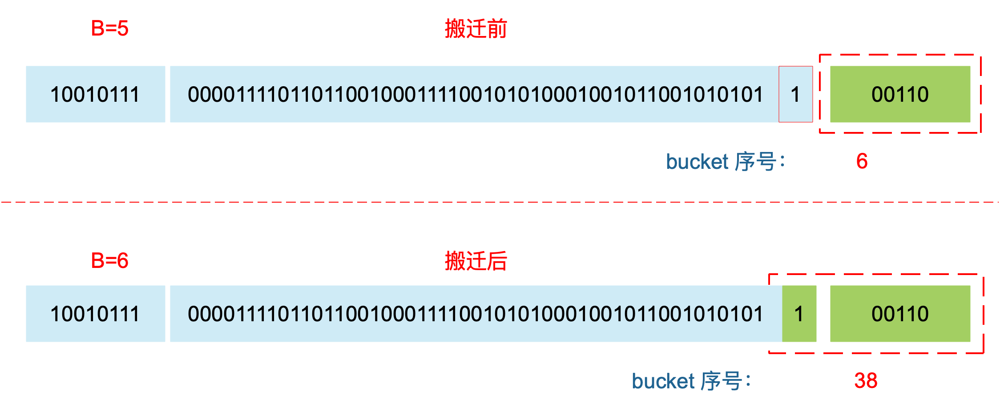
因此，某个 key 在搬迁前后 bucket 序号可能和原来相等，也可能是相比原来加上 2^B（原来的 B 值），取决于 hash 值 第 6 bit 位是 0 还是 1。
理解了上面 bucket 序号的变化，我们就可以回答另一个问题了：为什么遍历 map 是无序的？
map 在扩容后，会发生 key 的搬迁，原来落在同一个 bucket 中的 key，搬迁后，有些 key 就要远走高飞了（bucket 序号加上了 2^B）。而遍历的过程，就是按顺序遍历 bucket，同时按顺序遍历 bucket 中的 key。搬迁后，key 的位置发生了重大的变化，有些 key 飞上高枝，有些 key 则原地不动。这样，遍历 map 的结果就不可能按原来的顺序了。
当然，如果我就一个 hard code 的 map，我也不会向 map 进行插入删除的操作，按理说每次遍历这样的 map 都会返回一个固定顺序的 key/value 序列吧。的确是这样，但是 Go 杜绝了这种做法，因为这样会给新手程序员带来误解，以为这是一定会发生的事情，在某些情况下，可能会酿成大错。
当然，Go 做得更绝，当我们在遍历 map 时，并不是固定地从 0 号 bucket 开始遍历，每次都是从一个随机值序号的 bucket 开始遍历，并且是从这个 bucket 的一个随机序号的 cell 开始遍历。这样，即使你是一个写死的 map，仅仅只是遍历它，也不太可能会返回一个固定序列的 key/value 对了。
多说一句，“迭代 map 的结果是无序的”这个特性是从 go 1.0 开始加入的。
再明确一个问题：如果扩容后，B 增加了 1，意味着 buckets 总数是原来的 2 倍，原来 1 号的桶“裂变”到两个桶。
例如，原始 B = 2，1号 bucket 中有 2 个 key 的哈希值低 3 位分别为：010，110。由于原来 B = 2，所以低 2 位 10 决定它们落在 2 号桶，现在 B 变成 3，所以 010、110 分别落入 2、6 号桶。
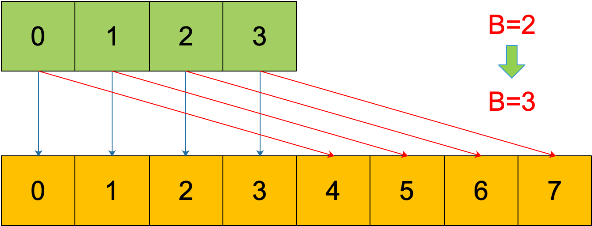
理解了这个，后面讲 map 迭代的时候会用到。
再来讲搬迁函数中的几个关键点：
evacuate 函数每次只完成一个 bucket 的搬迁工作，因此要遍历完此 bucket 的所有的 cell，将有值的 cell copy 到新的地方。bucket 还会链接 overflow bucket，它们同样需要搬迁。因此会有 2 层循环，外层遍历 bucket 和 overflow bucket，内层遍历 bucket 的所有 cell。这样的循环在 map 的源码里到处都是，要理解透了。
源码里提到 X, Y part，其实就是我们说的如果是扩容到原来的 2 倍，桶的数量是原来的 2 倍，前一半桶被称为 X part，后一半桶被称为 Y part。一个 bucket 中的 key 可能会分裂落到 2 个桶，一个位于 X part，一个位于 Y part。所以在搬迁一个 cell 之前，需要知道这个 cell 中的 key 是落到哪个 Part。很简单，重新计算 cell 中 key 的 hash，并向前“多看”一位，决定落入哪个 Part，这个前面也说得很详细了。
有一个特殊情况是：有一种 key，每次对它计算 hash，得到的结果都不一样。这个 key 就是 math.NaN() 的结果，它的含义是 not a number，类型是 float64。当它作为 map 的 key，在搬迁的时候，会遇到一个问题：再次计算它的哈希值和它当初插入 map 时的计算出来的哈希值不一样！
你可能想到了，这样带来的一个后果是，这个 key 是永远不会被 Get 操作获取的！当我使用 m[math.NaN()] 语句的时候，是查不出来结果的。这个 key 只有在遍历整个 map 的时候，才有机会现身。所以，可以向一个 map 插入任意数量的 math.NaN() 作为 key。
当搬迁碰到 math.NaN() 的 key 时，只通过 tophash 的最低位决定分配到 X part 还是 Y part（如果扩容后是原来 buckets 数量的 2 倍）。如果 tophash 的最低位是 0 ，分配到 X part；如果是 1 ，则分配到 Y part。
这是通过 tophash 值与新算出来的哈希值进行运算得到的：
if top&1 != 0 {
// top hash 最低位为 1
// 新算出来的 hash 值的 B 位置 1
hash |= newbit
} else {
// 新算出来的 hash 值的 B 位置 0
hash &^= newbit
}
// hash 值的 B 位为 0，则搬迁到 x part
// 当 B = 5时，newbit = 32，二进制低 6 位为 10 0000
useX = hash&newbit == 0其实这样的 key 我随便搬迁到哪个 bucket 都行，当然，还是要搬迁到上面裂变那张图中的两个 bucket 中去。但这样做是有好处的，在后面讲 map 迭代的时候会再详细解释，暂时知道是这样分配的就行。
确定了要搬迁到的目标 bucket 后，搬迁操作就比较好进行了。将源 key/value 值 copy 到目的地相应的位置。
设置 key 在原始 buckets 的 tophash 为 evacuatedX 或是 evacuatedY，表示已经搬迁到了新 map 的 x part 或是 y part。新 map 的 tophash 则正常取 key 哈希值的高 8 位。
下面通过图来宏观地看一下扩容前后的变化。
扩容前，B = 2，共有 4 个 buckets，lowbits 表示 hash 值的低位。假设我们不关注其他 buckets 情况，专注在 2 号 bucket。并且假设 overflow 太多，触发了等量扩容（对应于前面的条件 2）。
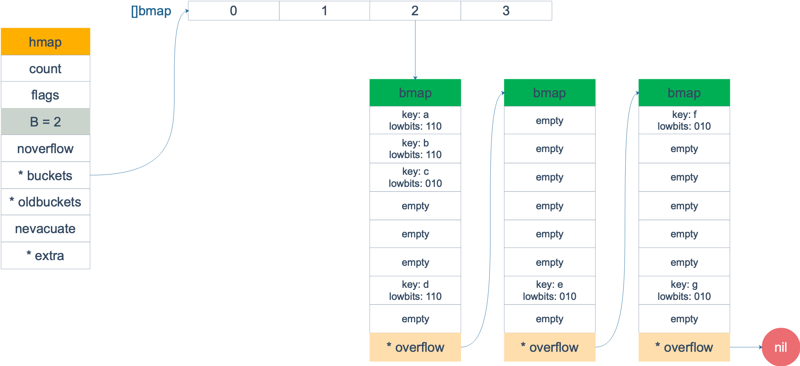
扩容完成后，overflow bucket 消失了，key 都集中到了一个 bucket，更为紧凑了，提高了查找的效率。
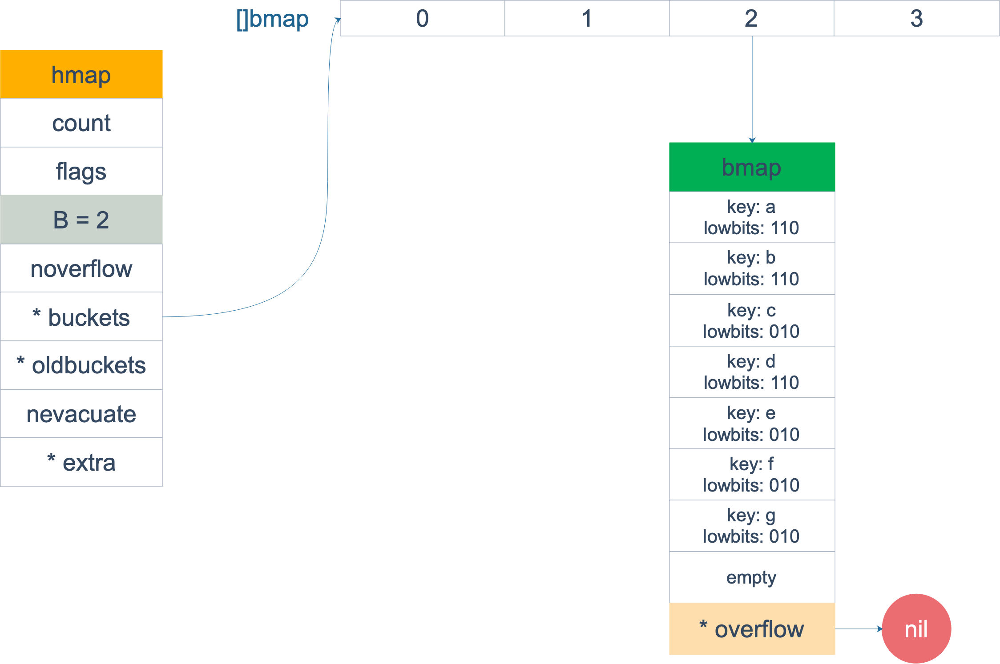
假设触发了 2 倍的扩容，那么扩容完成后，老 buckets 中的 key 分裂到了 2 个 新的 bucket。一个在 x part，一个在 y 的 part。依据是 hash 的 lowbits。新 map 中 0-3 称为 x part，4-7 称为 y part。
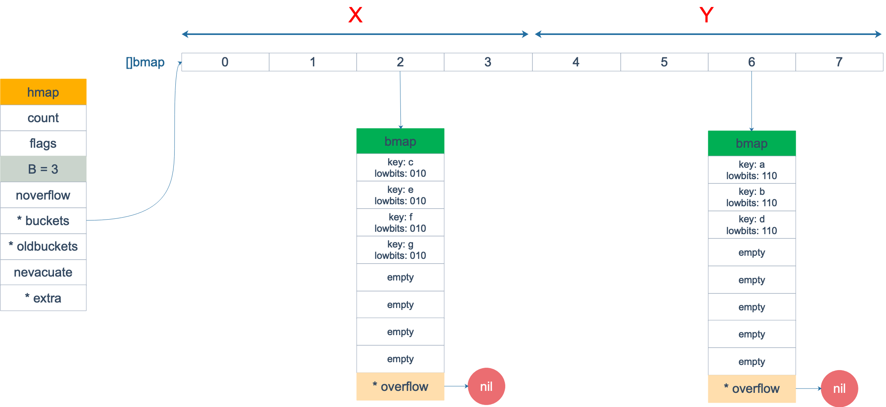
注意，上面的两张图忽略了其他 buckets 的搬迁情况，表示所有的 bucket 都搬迁完毕后的情形。实际上，我们知道，搬迁是一个“渐进”的过程，并不会一下子就全部搬迁完毕。所以在搬迁过程中，oldbuckets 指针还会指向原来老的 []bmap，并且已经搬迁完毕的 key 的 tophash 值会是一个状态值，表示 key 的搬迁去向。
map 的遍历
本来 map 的遍历过程比较简单：遍历所有的 bucket 以及它后面挂的 overflow bucket，然后挨个遍历 bucket 中的所有 cell。每个 bucket 中包含 8 个 cell，从有 key 的 cell 中取出 key 和 value，这个过程就完成了。
但是，现实并没有这么简单。还记得前面讲过的扩容过程吗？扩容过程不是一个原子的操作，它每次最多只搬运 2 个 bucket，所以如果触发了扩容操作，那么在很长时间里，map 的状态都是处于一个中间态：有些 bucket 已经搬迁到新家，而有些 bucket 还待在老地方。
因此，遍历如果发生在扩容的过程中，就会涉及到遍历新老 bucket 的过程，这是难点所在。
我先写一个简单的代码样例，假装不知道遍历过程具体调用的是什么函数：
package main
import "fmt"
func main() {
ageMp := make(map[string]int)
ageMp["qcrao"] = 18
for name, age := range ageMp {
fmt.Println(name, age)
}
}执行命令：
go tool compile -S main.go得到汇编命令。这里就不逐行讲解了，可以去看之前的几篇文章，说得很详细。
关键的几行汇编代码如下：
// ......
0x0124 00292 (test16.go:9) CALL runtime.mapiterinit(SB)
// ......
0x01fb 00507 (test16.go:9) CALL runtime.mapiternext(SB)
0x0200 00512 (test16.go:9) MOVQ ""..autotmp_4+160(SP), AX
0x0208 00520 (test16.go:9) TESTQ AX, AX
0x020b 00523 (test16.go:9) JNE 302
// ......这样，关于 map 迭代，底层的函数调用关系一目了然。先是调用 mapiterinit 函数初始化迭代器，然后循环调用 mapiternext 函数进行 map 迭代。
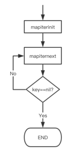
迭代器的结构体定义：
type hiter struct {
// key 指针
key unsafe.Pointer
// value 指针
value unsafe.Pointer
// map 类型，包含如 key size 大小等
t *maptype
// map header
h *hmap
// 初始化时指向的 bucket
buckets unsafe.Pointer
// 当前遍历到的 bmap
bptr *bmap
overflow [2]*[]*bmap
// 起始遍历的 bucet 编号
startBucket uintptr
// 遍历开始时 cell 的编号（每个 bucket 中有 8 个 cell）
offset uint8
// 是否从头遍历了
wrapped bool
// B 的大小
B uint8
// 指示当前 cell 序号
i uint8
// 指向当前的 bucket
bucket uintptr
// 因为扩容，需要检查的 bucket
checkBucket uintptr
}mapiterinit 就是对 hiter 结构体里的字段进行初始化赋值操作。
前面已经提到过，即使是对一个写死的 map 进行遍历，每次出来的结果也是无序的。下面我们就可以近距离地观察他们的实现了。
// 生成随机数 r
r := uintptr(fastrand())
if h.B > 31-bucketCntBits {
r += uintptr(fastrand()) << 31
}
// 从哪个 bucket 开始遍历
it.startBucket = r & (uintptr(1)<<h.B - 1)
// 从 bucket 的哪个 cell 开始遍历
it.offset = uint8(r >> h.B & (bucketCnt - 1))例如，B = 2，那 uintptr(1)<<h.B - 1 结果就是 3，低 8 位为 0000 0011，将 r 与之相与，就可以得到一个 0~3 的 bucket 序号；bucketCnt - 1 等于 7，低 8 位为 0000 0111，将 r 右移 2 位后，与 7 相与，就可以得到一个 0~7 号的 cell。
于是，在 mapiternext 函数中就会从 it.startBucket 的 it.offset 号的 cell 开始遍历，取出其中的 key 和 value，直到又回到起点 bucket，完成遍历过程。
源码部分比较好看懂，尤其是理解了前面注释的几段代码后，再看这部分代码就没什么压力了。所以，接下来，我将通过图形化的方式讲解整个遍历过程，希望能够清晰易懂。
假设我们有下图所示的一个 map，起始时 B = 1，有两个 bucket，后来触发了扩容（这里不要深究扩容条件，只是一个设定），B 变成 2。并且， 1 号 bucket 中的内容搬迁到了新的 bucket，1 号裂变成 1 号和 3 号；0 号 bucket 暂未搬迁。老的 bucket 挂在在 *oldbuckets 指针上面，新的 bucket 则挂在 *buckets 指针上面。
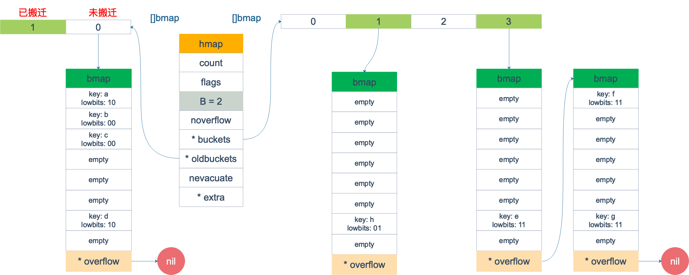
这时，我们对此 map 进行遍历。假设经过初始化后，startBucket = 3，offset = 2。于是，遍历的起点将是 3 号 bucket 的 2 号 cell，下面这张图就是开始遍历时的状态：
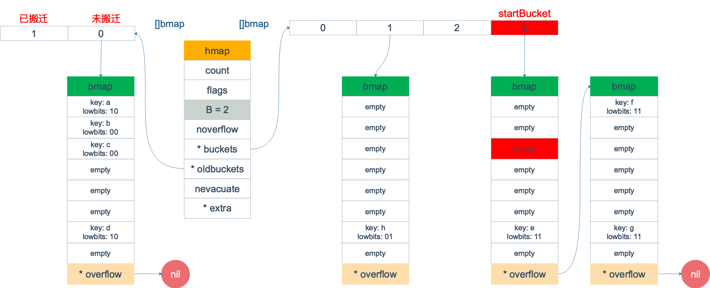
标红的表示起始位置，bucket 遍历顺序为：3 -> 0 -> 1 -> 2。
因为 3 号 bucket 对应老的 1 号 bucket，因此先检查老 1 号 bucket 是否已经被搬迁过。判断方法就是：
func evacuated(b *bmap) bool {
h := b.tophash[0]
return h > empty && h < minTopHash
}如果 b.tophash[0] 的值在标志值范围内，即在 (0,4) 区间里，说明已经被搬迁过了。
empty = 0
evacuatedEmpty = 1
evacuatedX = 2
evacuatedY = 3
minTopHash = 4在本例中，老 1 号 bucket 已经被搬迁过了。所以它的 tophash[0] 值在 (0,4) 范围内，因此只用遍历新的 3 号 bucket。
依次遍历 3 号 bucket 的 cell，这时候会找到第一个非空的 key：元素 e。到这里，mapiternext 函数返回，这时我们的遍历结果仅有一个元素：
由于返回的 key 不为空，所以会继续调用 mapiternext 函数。
继续从上次遍历到的地方往后遍历，从新 3 号 overflow bucket 中找到了元素 f 和 元素 g。
遍历结果集也因此壮大：
新 3 号 bucket 遍历完之后，回到了新 0 号 bucket。0 号 bucket 对应老的 0 号 bucket，经检查，老 0 号 bucket 并未搬迁，因此对新 0 号 bucket 的遍历就改为遍历老 0 号 bucket。那是不是把老 0 号 bucket 中的所有 key 都取出来呢？
并没有这么简单，回忆一下，老 0 号 bucket 在搬迁后将裂变成 2 个 bucket：新 0 号、新 2 号。而我们此时正在遍历的只是新 0 号 bucket（注意，遍历都是遍历的 *bucket 指针，也就是所谓的新 buckets）。所以，我们只会取出老 0 号 bucket 中那些在裂变之后，分配到新 0 号 bucket 中的那些 key。
因此，lowbits == 00 的将进入遍历结果集：
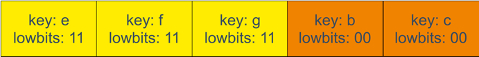
和之前的流程一样，继续遍历新 1 号 bucket，发现老 1 号 bucket 已经搬迁，只用遍历新 1 号 bucket 中现有的元素就可以了。结果集变成：
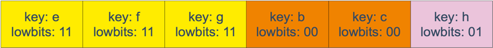
继续遍历新 2 号 bucket，它来自老 0 号 bucket，因此需要在老 0 号 bucket 中那些会裂变到新 2 号 bucket 中的 key，也就是 lowbit == 10 的那些 key。
这样，遍历结果集变成：
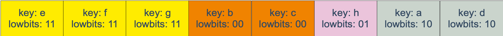
最后，继续遍历到新 3 号 bucket 时，发现所有的 bucket 都已经遍历完毕，整个迭代过程执行完毕。
顺便说一下，如果碰到 key 是 math.NaN() 这种的，处理方式类似。核心还是要看它被分裂后具体落入哪个 bucket。只不过只用看它 top hash 的最低位。如果 top hash 的最低位是 0 ，分配到 X part；如果是 1 ，则分配到 Y part。据此决定是否取出 key，放到遍历结果集里。
map 遍历的核心在于理解 2 倍扩容时，老 bucket 会分裂到 2 个新 bucket 中去。而遍历操作，会按照新 bucket 的序号顺序进行，碰到老 bucket 未搬迁的情况时，要在老 bucket 中找到将来要搬迁到新 bucket 来的 key。
map 的赋值
通过汇编语言可以看到，向 map 中插入或者修改 key，最终调用的是 mapassign 函数。
实际上插入或修改 key 的语法是一样的，只不过前者操作的 key 在 map 中不存在，而后者操作的 key 存在 map 中。
mapassign 有一个系列的函数，根据 key 类型的不同，编译器会将其优化为相应的“快速函数”。
| key 类型 | 插入 |
|---|---|
| uint32 | mapassign_fast32(t maptype, h hmap, key uint32) unsafe.Pointer |
| uint64 | mapassign_fast64(t maptype, h hmap, key uint64) unsafe.Pointer |
| string | mapassign_faststr(t maptype, h hmap, ky string) unsafe.Pointer |
我们只用研究最一般的赋值函数 mapassign。
整体来看，流程非常得简单：对 key 计算 hash 值，根据 hash 值按照之前的流程，找到要赋值的位置（可能是插入新 key，也可能是更新老 key），对相应位置进行赋值。
源码大体和之前讲的类似，核心还是一个双层循环，外层遍历 bucket 和它的 overflow bucket，内层遍历整个 bucket 的各个 cell。限于篇幅，这部分代码的注释我也不展示了，有兴趣的可以去看，保证理解了这篇文章内容后，能够看懂。
我这里会针对这个过程提几点重要的。
函数首先会检查 map 的标志位 flags。如果 flags 的写标志位此时被置 1 了，说明有其他协程在执行“写”操作，进而导致程序 panic。这也说明了 map 对协程是不安全的。
通过前文我们知道扩容是渐进式的，如果 map 处在扩容的过程中，那么当 key 定位到了某个 bucket 后，需要确保这个 bucket 对应的老 bucket 完成了迁移过程。即老 bucket 里的 key 都要迁移到新的 bucket 中来（分裂到 2 个新 bucket），才能在新的 bucket 中进行插入或者更新的操作。
上面说的操作是在函数靠前的位置进行的，只有进行完了这个搬迁操作后，我们才能放心地在新 bucket 里定位 key 要安置的地址，再进行之后的操作。
现在到了定位 key 应该放置的位置了，所谓找准自己的位置很重要。准备两个指针，一个（inserti）指向 key 的 hash 值在 tophash 数组所处的位置，另一个(insertk)指向 cell 的位置（也就是 key 最终放置的地址），当然，对应 value 的位置就很容易定位出来了。这三者实际上都是关联的，在 tophash 数组中的索引位置决定了 key 在整个 bucket 中的位置（共 8 个 key），而 value 的位置需要“跨过” 8 个 key 的长度。
在循环的过程中，inserti 和 insertk 分别指向第一个找到的空闲的 cell。如果之后在 map 没有找到 key 的存在，也就是说原来 map 中没有此 key，这意味着插入新 key。那最终 key 的安置地址就是第一次发现的“空位”（tophash 是 empty）。
如果这个 bucket 的 8 个 key 都已经放置满了，那在跳出循环后，发现 inserti 和 insertk 都是空，这时候需要在 bucket 后面挂上 overflow bucket。当然，也有可能是在 overflow bucket 后面再挂上一个 overflow bucket。这就说明，太多 key hash 到了此 bucket。
在正式安置 key 之前，还要检查 map 的状态，看它是否需要进行扩容。如果满足扩容的条件，就主动触发一次扩容操作。
这之后，整个之前的查找定位 key 的过程，还得再重新走一次。因为扩容之后，key 的分布都发生了变化。
最后，会更新 map 相关的值，如果是插入新 key，map 的元素数量字段 count 值会加 1；在函数之初设置的 hashWriting 写标志出会清零。
另外，有一个重要的点要说一下。前面说的找到 key 的位置，进行赋值操作，实际上并不准确。我们看 mapassign 函数的原型就知道，函数并没有传入 value 值，所以赋值操作是什么时候执行的呢？
func mapassign(t *maptype, h *hmap, key unsafe.Pointer) unsafe.Pointer答案还得从汇编语言中寻找。我直接揭晓答案，有兴趣可以私下去研究一下。mapassign 函数返回的指针就是指向的 key 所对应的 value 值位置，有了地址，就很好操作赋值了。
map 的删除
写操作底层的执行函数是 mapdelete：
func mapdelete(t *maptype, h *hmap, key unsafe.Pointer) 根据 key 类型的不同，删除操作会被优化成更具体的函数：
| key 类型 | 删除 |
|---|---|
| uint32 | mapdelete_fast32(t maptype, h hmap, key uint32) |
| uint64 | mapdelete_fast64(t maptype, h hmap, key uint64) |
| string | mapdelete_faststr(t maptype, h hmap, ky string) |
当然，我们只关心 mapdelete 函数。它首先会检查 h.flags 标志，如果发现写标位是 1，直接 panic，因为这表明有其他协程同时在进行写操作。
计算 key 的哈希，找到落入的 bucket。检查此 map 如果正在扩容的过程中，直接触发一次搬迁操作。
删除操作同样是两层循环，核心还是找到 key 的具体位置。寻找过程都是类似的，在 bucket 中挨个 cell 寻找。
找到对应位置后，对 key 或者 value 进行“清零”操作：
// 对 key 清零
if t.indirectkey {
*(*unsafe.Pointer)(k) = nil
} else {
typedmemclr(t.key, k)
}
// 对 value 清零
if t.indirectvalue {
*(*unsafe.Pointer)(v) = nil
} else {
typedmemclr(t.elem, v)
}最后，将 count 值减 1，将对应位置的 tophash 值置成 Empty。
这块源码同样比较简单，感兴起直接去看代码。
map 进阶
可以边遍历边删除吗
map 并不是一个线程安全的数据结构。同时读写一个 map 是未定义的行为，如果被检测到，会直接 panic。
一般而言，这可以通过读写锁来解决：sync.RWMutex。
读之前调用 RLock() 函数，读完之后调用 RUnlock() 函数解锁；写之前调用 Lock() 函数，写完之后，调用 Unlock() 解锁。
另外，sync.Map 是线程安全的 map，也可以使用。它的实现原理，这次先不说了。
key 可以是 float 型吗？
从语法上看，是可以的。Go 语言中只要是可比较的类型都可以作为 key。除开 slice，map，functions 这几种类型，其他类型都是 OK 的。具体包括：布尔值、数字、字符串、指针、通道、接口类型、结构体、只包含上述类型的数组。这些类型的共同特征是支持 == 和 != 操作符，k1 == k2 时，可认为 k1 和 k2 是同一个 key。如果是结构体，则需要它们的字段值都相等，才被认为是相同的 key。
顺便说一句，任何类型都可以作为 value，包括 map 类型。
来看个例子：
func main() {
m := make(map[float64]int)
m[1.4] = 1
m[2.4] = 2
m[math.NaN()] = 3
m[math.NaN()] = 3
for k, v := range m {
fmt.Printf("[%v, %d] ", k, v)
}
fmt.Printf("\nk: %v, v: %d\n", math.NaN(), m[math.NaN()])
fmt.Printf("k: %v, v: %d\n", 2.400000000001, m[2.400000000001])
fmt.Printf("k: %v, v: %d\n", 2.4000000000000000000000001, m[2.4000000000000000000000001])
fmt.Println(math.NaN() == math.NaN())
}程序的输出：
[2.4, 2] [NaN, 3] [NaN, 3] [1.4, 1]
k: NaN, v: 0
k: 2.400000000001, v: 0
k: 2.4, v: 2
false例子中定义了一个 key 类型是 float 型的 map，并向其中插入了 4 个 key：1.4， 2.4， NAN，NAN。
打印的时候也打印出了 4 个 key，如果你知道 NAN != NAN，也就不奇怪了。因为他们比较的结果不相等，自然，在 map 看来就是两个不同的 key 了。
接着，我们查询了几个 key，发现 NAN 不存在，2.400000000001 也不存在，而 2.4000000000000000000000001 却存在。
有点诡异，不是吗？
接着，我通过汇编发现了如下的事实：
当用 float64 作为 key 的时候，先要将其转成 unit64 类型，再插入 key 中。
具体是通过 Float64frombits 函数完成：
// Float64frombits returns the floating point number corresponding
// the IEEE 754 binary representation b.
func Float64frombits(b uint64) float64 { return *(*float64)(unsafe.Pointer(&b)) }也就是将浮点数表示成 IEEE 754 规定的格式。如赋值语句：
0x00bd 00189 (test18.go:9) LEAQ "".statictmp_0(SB), DX
0x00c4 00196 (test18.go:9) MOVQ DX, 16(SP)
0x00c9 00201 (test18.go:9) PCDATA $0, $2
0x00c9 00201 (test18.go:9) CALL runtime.mapassign(SB)"".statictmp_0(SB) 变量是这样的：
"".statictmp_0 SRODATA size=8
0x0000 33 33 33 33 33 33 03 40
"".statictmp_1 SRODATA size=8
0x0000 ff 3b 33 33 33 33 03 40
"".statictmp_2 SRODATA size=8
0x0000 33 33 33 33 33 33 03 40我们再来输出点东西：
package main
import (
"fmt"
"math"
)
func main() {
m := make(map[float64]int)
m[2.4] = 2
fmt.Println(math.Float64bits(2.4))
fmt.Println(math.Float64bits(2.400000000001))
fmt.Println(math.Float64bits(2.4000000000000000000000001))
}4612586738352864255
4612586738352862003
4612586738352862003转成十六进制为：
0x4003333333333333
0x4003333333333BFF
0x4003333333333333和前面的 "".statictmp_0 比较一下，很清晰了吧。2.4 和 2.4000000000000000000000001 经过 math.Float64bits() 函数转换后的结果是一样的。自然，二者在 map 看来，就是同一个 key 了。
再来看一下 NAN（not a number）：
// NaN returns an IEEE 754 ``not-a-number'' value.
func NaN() float64 { return Float64frombits(uvnan) }uvan 的定义为：
uvnan = 0x7FF8000000000001NAN() 直接调用 Float64frombits，传入写死的 const 型变量 0x7FF8000000000001，得到 NAN 型值。既然，NAN 是从一个常量解析得来的，为什么插入 map 时，会被认为是不同的 key？
这是由类型的哈希函数决定的，例如，对于 64 位的浮点数，它的哈希函数如下：
func f64hash(p unsafe.Pointer, h uintptr) uintptr {
f := *(*float64)(p)
switch {
case f == 0:
return c1 * (c0 ^ h) // +0, -0
case f != f:
return c1 * (c0 ^ h ^ uintptr(fastrand())) // any kind of NaN
default:
return memhash(p, h, 8)
}
}第二个 case，f != f 就是针对 NAN，这里会再加一个随机数。
这样，所有的谜题都解开了。
由于 NAN 的特性：
NAN != NAN
hash(NAN) != hash(NAN)因此向 map 中查找的 key 为 NAN 时，什么也查不到；如果向其中增加了 4 次 NAN，遍历会得到 4 个 NAN。
最后说结论：float 型可以作为 key，但是由于精度的问题，会导致一些诡异的问题，慎用之。
总结
在写作本文时，有些问题看遍了中文世界的博客都没能找到解答。当然，源码可以解答任何问题。但是，你不能一下子跳进源码的细节，你得先有一个整体的认识才好。
所以，我开始搜索英文相关讲源码的文章，没有太多这方面的。但是我发现了一篇质量很高的文章，放在了参考资料第一条，它带领读者一步步优化，最终实现了从 map 中随机取出一个 key。推荐你去阅读，非常精彩。尤其是你知道了 map 的底层遍历、扩容的具体过程后更是如此。
总结一下，Go 语言中，通过哈希查找表实现 map，用链表法解决哈希冲突。
通过 key 的哈希值将 key 散落到不同的桶中，每个桶中有 8 个 cell。哈希值的低位决定桶序号，高位标识同一个桶中的不同 key。
当向桶中添加了很多 key，造成元素过多，或者溢出桶太多，就会触发扩容。扩容分为等量扩容和 2 倍容量扩容。扩容后，原来一个 bucket 中的 key 一分为二，会被重新分配到两个桶中。
扩容过程是渐进的，主要是防止一次扩容需要搬迁的 key 数量过多，引发性能问题。触发扩容的时机是增加了新元素，bucket 搬迁的时机则发生在赋值、删除期间，每次最多搬迁两个 bucket。
查找、赋值、删除的一个很核心的内容是如何定位到 key 所在的位置，需要重点理解。一旦理解，关于 map 的源码就可以看懂了。
最后，如果文章对你有帮助，恳请你帮我分享一下，或者点一下在看，谢谢！
最后的最后，点击阅读原文，你可能会参与见证一个从零开始的千星项目。
参考资料
【english 如何实现随机取一个map的key，非常精彩】https://lukechampine.com/hackmap.html
【map 的维基百科】https://en.wikipedia.org/wiki/Associative_array
【sync.map 源码分析】https://github.com/Chasiny/Blog/blob/master/blog/go/sync.Map%E6%BA%90%E7%A0%81%E5%88%86%E6%9E%90.md
【各种 map 相关操作的流程图】https://www.jianshu.com/p/aa0d4808cbb8
【map 源码分析】https://www.twblogs.net/a/5bd78d5d2b71777ac86b541f
【曹大关于map的文章 不用解释】https://github.com/cch123/golang-notes/blob/master/map.md
【english 有图】https://www.ardanlabs.com/blog/2013/12/macro-view-of-map-internals-in-go.html
【english 对比了 java, c++ 的 map 实现】https://dave.cheney.net/2018/05/29/how-the-go-runtime-implements-maps-efficiently-without-generics
【english 为什么 go map 对竞争敏感】https://dave.cheney.net/2015/12/07/are-go-maps-sensitive-to-data-races
【golang blog map】https://blog.golang.org/go-maps-in-action
【randommap 开源代码】https://github.com/lukechampine/randmap
【图不错】https://hacpai.com/article/1533916370874
【夜读issue】https://github.com/developer-learning/reading-go/issues/332
【新发现的博客，很有深度】https://draveness.me/golang-hashmap
【扩容过程+图】https://my.oschina.net/renhc/blog/2208417
【运算符】https://juejin.im/post/5c0e572fe51d4522ad6e59d5
【english】https://www.digitalocean.com/community/tutorials/understanding-maps-in-go
【map 遍历 源码简单阐述】https://gocn.vip/article/1704
【短文，同时遍历、删除key是可以的】https://cloud.tencent.com/developer/article/1065474
【面向信仰编程，golang range】https://draveness.me/golang-for-range
【slice 和 map 作为参数的区别】https://stackoverflow.com/questions/47590444/slice-vs-map-to-be-used-in-parameter/47590531#47590531
【Go官方博客关于 map】https://blog.golang.org/go-maps-in-action
【Go 语言可比较类型】https://golang.org/ref/spec#Comparison_operators
【key 类型】http://lanlingzi.cn/post/technical/2016/0904_go_map/
【哈希函数性能比较】http://aras-p.info/blog/2016/08/09/More-Hash-Function-Tests/
【哈希函数选择，C++/Java 对比】https://studygolang.com/articles/15839
【slice 和 map 作为函数参数】https://stackoverflow.com/questions/47590444/slice-vs-map-to-be-used-in-parameter/47590531#47590531
【如何比较两个 map 相等】https://golangbot.com/maps/
【NAN hash】https://research.swtch.com/randhash